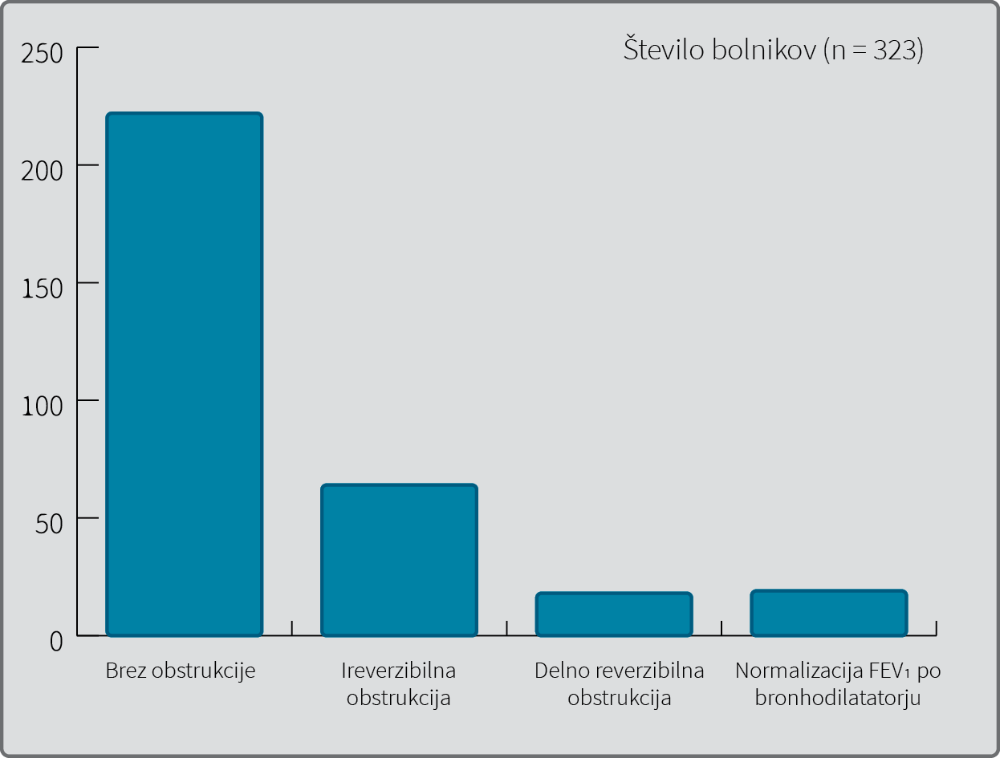
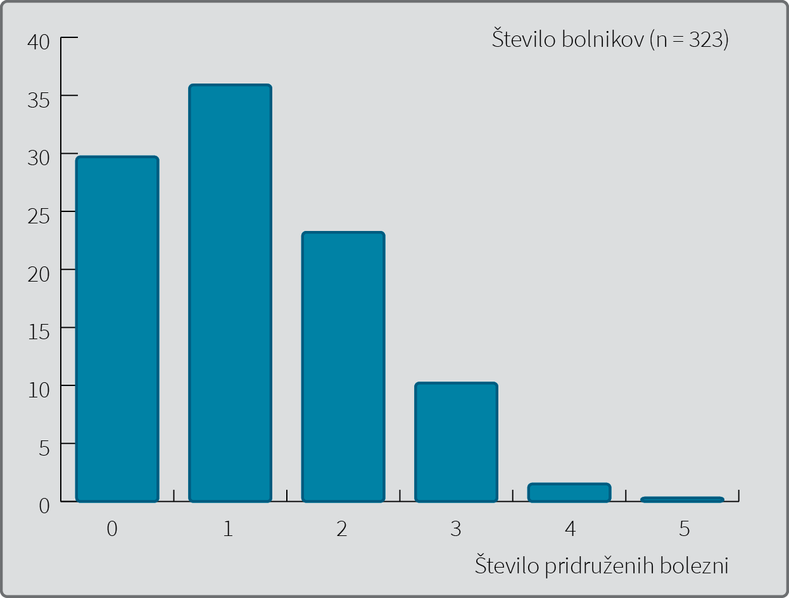
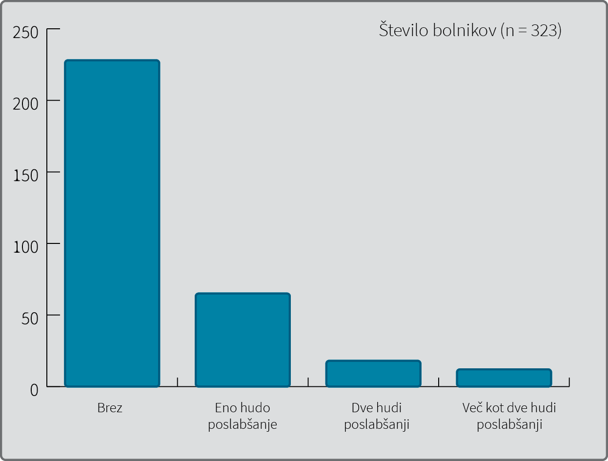

Opazovalna raziskava odraslih bolnikov z neurejeno astmo v zunajbolnišničnih pnevmoloških ambulantah po Sloveniji
Observational study of adult patients with uncontrolled asthma in pneumology outpatients clinics in Slovenia
Izvleček
Abstract
1 Uvod
Astma je pogosta kronična vnetna bolezen dihalnih poti. Cilj zdravljenja astme po smernicah GINA (Global Initiative for Asthma) je doseči nadzor nad boleznijo (1). Nadzor nad boleznijo vključuje nadzor simptomov in zmanjševanje tveganja za: akutna poslabšanja astme, razvoj trajne obstrukcije na dihalnih poteh in pojav lokalnih ter sistemskih stranskih učinkov zdravil. Ocena nadzora simptomov temelji na preverjanju štirih kliničnih parametrov in se nanaša na zadnje štiri tedne pred ocenjevanjem bolnika. Astma se glede na prisotnost dnevnih in nočnih simptomov, uporabo olajševalca in omejeno aktivnost bolnika opredeljuje kot urejena, delno urejena ali neurejena (Tabela 1).
|
Parametri urejenosti astme |
Stopnja urejenosti astme |
||
|
Zadnje 4 tedne pred oceno |
Urejena |
Delno urejena |
Neurejena |
|
Dnevni simptomi astme (simptomi več kot 2-krat na teden) |
Ne |
||
|
Nočni simptomi astme (kadar koli v zadnjih 4 tednih) |
Ne |
1 – 2 parametra |
3 – 4 parametri |
|
Uporaba kratkodelujočega olajševalca (več kot 2-krat na teden) |
Ne |
||
|
Omejitve aktivnosti zaradi astme (kadar koli v zadnjih 4 tednih) |
Ne |
||
Mednarodna raziskava REALISE (
Najpogostejši vzroki za neurejeno astmo so: nepravilno jemanje zdravil, slabo sodelovanje (adherenca) bolnika, nepravilna diagnoza astme, pridružene bolezni in stanja, ki zapletajo stanje, kot so rinosinuzitis, GERB (gastroezofagealna refluksna bolezen), anksioznost in depresija, debelost, obstruktivna nočna apneja, kajenje, pa tudi stalna izpostavljenost specifičnim sprožilcem astme (blokatorji beta, zaviralci angiotenzinske konvertaze, nesteroidna protivnetna zdravila ali izpostavljenost alergenom v delovnem ali domačem okolju) (1). Proti zdravilom odporna težka astma (
V prispevku predstavljamo rezultate raziskave odraslih bolnikov z neurejeno astmo, ki so bili v petmesečnem obdobju v letih 2017 in 2018 obravnavani v zunajbolnišničnih specialističnih ambulantah po Sloveniji.
Namen naše raziskave je bil poiskati najpogostejše vzroke za neurejeno astmo na vzorcu odraslih bolnikov z astmo v Sloveniji. V prispevku se tudi osredinjamo na pogostost hudih poslabšanj astme v zadnjem letu, povezavo med vzroki za neurejeno astmo in večjim številom hudih poslabšanj in oceno deleža bolnikov s težko astmo.
2 Material in metode
2.1 Preiskovanci
V neintervencijski opazovalni presečni raziskavi so specialisti pulmologije oz. interne medicine vključevali odrasle bolnike z neurejeno astmo, ki so bili v obdobju od decembra 2017 do aprila 2018 obravnavani v 14 zunajbolnišničnih specialističnih ambulantah po Sloveniji. Obravnavani bolniki so bili naročeni na redno kontrolo v specialistično ambulanto ali pa so jih napotili družinski zdravniki zaradi neurejene astme. V raziskavi so lahko sodelovali le bolniki, starejši od 18 let, ki so imeli vsaj 12 mesecev klinično diagnozo astme potrjeno s pozitivnim bronhodilatacijskim testom ali pozitivnim metaholinskim provokacijskim testom (PD20 pri 2 mg metaholina ali manj). Astma je morala biti po merilih GINA neurejena (Tabela 1). Bolnik vsaj en mesec pred vključitvijo v raziskavo ni smel imeti poslabšanja astme, ki bi zahtevala spremembo vzdrževalnega zdravljenja. Izključitvena merila so bila še akutna bolezen, nosečnost in sodelovanje v kakršnem koli kliničnem preskušanju v preteklih 12 mesecih.
2.2 Metoda dela
Podatki so bili zbrani iz kartotek bolnikov, na podlagi informacij, ki jih je zdravnik dobil na obisku preiskovanca in na osnovi strokovne presoje specialista. Podatki so se vpisovali v elektronski sistem za zbiranje podatkov. V elektronski vprašalnik so zdravniki v prvem delu vnesli demografske podatke, čas postavitve diagnoze astme, trenutno predpisana zdravila za astmo, meritve pljučne funkcije, ki je bila opravljena na dan obiska. Obstrukcijo smo definirali kot zmanjšanje indeksa Tiffeneau (T.I.) – razmerja med forsiranim izdihanim volumnom v prvi sekundi (FEV1) in vitalno kapaciteto (VC) – (FEV1/VC) za več kot 12 % pod normo (referenčno vrednost). Pri vseh bolnikih z obstrukcijo na dihalih je bil opravljen še bronhodilatacijski test. Test smo vrednotili kot pozitiven, če se je 15 minut po 4 vdihih (0,4 mg) salbutamola vrednost FEV1 povečala za 12 % izhodne vrednosti in za vsaj 200 ml. V drugem delu so se vnesli možni razlogi za neurejeno astmo. Specialist je opravil neposredni kontrolni pregled uporabe vdihovalnika in ocenil, ali gre za dobro, sprejemljivo ali slabo uporabo vdihovalnika. Za dobro uporabo so zdravniki ocenili povsem pravilno uporabo vdihovalnika, za sprejemljivo uporabo, pri kateri so bolniki napravili eno ali več napak, ki pa niso bistveno zmanjšale prejeti odmerek zdravila, za slabo uporabo pa tisto, pri kateri so bolniki napravili kritično napako, zaradi katere niso dobili nič ali pa zelo malo zdravila. Sodelovanje (adherenco) smo ocenjevali na osnovi izdanih in porabljenih zdravil iz baze elektronskega recepta. Adherentni bolniki so bili tisti, katerim so bila zdravila za astmo redno predpisana, bolniki pa so zdravila v lekarni pravočasno prevzeli. Na osnovi strokovne presoje specialista smo ocenili bolnikovo razumevanje zdravil za astmo, neprimernost predpisanih zdravil ter morebitno prisotnost specifičnih sprožilcev astme v bolnikovem okolju. Iz medicinske dokumentacije in anamneze smo dobili podatke o pridruženih boleznih in stanjih ter izdanem načrtu samozdravljenja astme. V vprašalnik so zdravniki vpisali še število hudih poslabšanj v zadnjem letu in svojo strokovno presojo, ali gre pri bolniku za težko astmo. V raziskavi so bila huda poslabšanja opredeljena kot poslabšanja astme, pri katerih je bolnik potreboval pomoč zdravstvenega osebja v ambulanti ali na urgenci in je imel frekvenco dihanja več kot 30/min, srčni utrip več kot 120/min, nasičenost krvi s kisikom manj kot 90 % in PEF manj kot 50 % svoje najboljše vrednosti (1). Mednarodne smernice GINA opredeljujejo težko astmo kot astmo, ki potrebuje v zadnjih 12 mesecih zdravljenje z visokimi odmerki inhalacijskih glukokortikoidov (IGK) skupaj s še enim preprečevalnim zdravilom in/ali sistemskim glukokortikoidom (vsaj 6 mesecev) za doseganje urejenosti astme ali pa kadar astma kljub tej terapiji ostane neurejena. O visokem odmerku inhalacijskega glukokortikoida govorimo, ko dnevni odmerek zdravila preseže 800 µg pri budezonidu, 500 µg pri flutikazonu, 320 µg pri ciklezonidu, 800 µg pri mometazonu in 400 µg pri beklometazonu (HFA) (1).
2.3 Statistične metode
Vse spremenljivke so bile povzete z opisno statistiko. Zvezne spremenljivke so bile prikazane s povprečjem in standardnim odklonom; porazdelitve so bile predstavljene tudi grafično. Kategorične spremenljivke so bile prikazane s številom in deleži (odstotki). Razen prikaza opisnih statistik ni bilo
Raziskavo je odobrila Komisija RS za medicinsko etiko 13. novembra 2017 (sklep št. 0120–560/2017). Raziskavo je finančno podprlo podjetje AstraZeneca, podružnica v Ljubljani.
3 Rezultati
Analiziran vzorec je zajel 323 bolnikov z astmo, ki so med 27. decembrom 2017 in 30. aprilom 2018 obiskali pnevmološke ambulante. V raziskavo je bilo vključenih 114 bolnikov (35,3 %) in 209 bolnic (64,7 %). Povprečna starost vseh bolnikov je bila 56,8 let. Bolniki so imeli astmo pred vključitvijo v raziskavo v povprečju 13,4 let. Kadilcev je bilo 48, nekadilcev ali bivših kadilcev pa 275 bolnikov (Tabela 2). Normalno pljučno funkcijo je imelo 222 bolnikov (68,7 %), pri 101 bolniku (31,3 %) je bila spirografsko izmerjena obstrukcija na dihalih, zato so opravili spirometrijo še po bronhodilatatorju. Po bronhodilatatorju se je pljučna funkcija normalizirala pri 19 (5,8 %) bolnikih. Pri 82 (25,3 %) bolnikih je bila obstrukcija delno popravljiva (pozitiven bronhodilatacijski test) ali nepopravljiva (Slika 1). Od zdravil je olajševalec uporabljalo 300 bolnikov (92,9 %), brez olajševalca pa je bilo 23 bolnikov (7,1 %). Razen olajševalca ni uporabljalo druge terapije 19 bolnikov (5,9 %). Enotirno terapijo je uporabljalo 84 bolnikov (26,0 %), 2-tirno 152 (47,1 %), 3-tirno 49 (15,2 %), 4-tirno 17 (5,3 %) in 5-tirno 2 bolnika (0,6 %). Bioloških zdravil ni uporabljal nihče (Tabela 3).

|
Samo olajševalec |
1-tirno |
2-tirno |
3-tirno |
4-tirno |
5-tirno |
|
|
19 |
||||||
|
IGK |
78 |
|||||
|
ALR |
6 |
|||||
|
IGK/LABA |
140 |
|||||
|
IGK + ALR |
12 |
|||||
|
IGK/LABA + ALR |
31 |
|||||
|
IGK/LABA + LAMA |
15 |
|||||
|
IGK/LABA + OGK |
3 |
|||||
|
IGK/LABA + ALR + LAMA |
11 |
|||||
|
IGK/LABA + ALR + OGK |
3 |
|||||
|
IGK/LABA + ALR + drugo |
2 |
|||||
|
IGK/LABA + LAMA + drugo |
1 |
|||||
|
IGK/LABA + ALR + LAMA + drugo |
2 |
|||||
|
19 (5,9 %) |
84 (26 %) |
152 (47,1 %) |
49 (15,2 %) |
17 (5,3 %) |
2 (0,6 %) |
IGK: inhalacijski glukokortikoid, ALR: antilevkotrien, LABA: dolgodelujoči beta2 agonist, LAMA: dolgodelujoči antiholinergik, OGK: oralni glukokortikoid
Načrt samozdravljenja astme je imelo 207 bolnikov (64,1 %), vlogo olajševalnih in preprečevalnih zdravil je razumelo 208 bolnikov (64,4 %), redno je zdravila jemalo 172 bolnikov (53,3 %), občasno 117 bolnikov (36,2 %), 34 bolnikov (10,4 %) pa zdravil sploh ni jemalo. Dobro tehniko uporabe vdihovalnika je pokazalo 160 bolnikov (49,5 %), sprejemljivo 109 bolnikov (33,7 %) in slabo 54 bolnikov (16,7 %). 240 bolnikov (74,3 %) je po mnenju specialista imelo predpisano ustrezno terapijo, 83 bolnikov (25,7 %) pa ne (Tabela 4).
|
Ali ima bolnik načrt samozdravljenja? |
Da 207 (64,1 %) |
Ne 116 (35,9 %) |
||
|
Ali menite, da bolnik razume vlogo olajševalnih in preprečevalnih zdravil za zdravljenje astme? |
DA 208 (64,4 %) |
NE 115 (35,6 %) |
||
|
Ali menite, da bolnik redno jemlje zdravila (izdaja zdravil in dejanska poraba)? |
Redno 172 (53,3 %) |
Občasno 117 (36,2 %) |
Ne jemlje 34 (10,5 %) |
|
|
Ali zna bolnik pravilno pokazati tehniko inhaliranja svojega zdravila? |
Da 160 (49,5 %) |
Sprejemljivo 109 (33,7 %) |
Slabo 54 (16,7 %) |
|
|
Ali ima bolnik po vašem mnenju predpisano ustrezno terapijo za zdravljenje astme? |
DA 240 (74,3 %) |
NE 83 (25,7 %) |
||
Pridružene bolezni, ki bi lahko pomembno vplivale na urejenost astme, je imelo 227 bolnikov (70,3 %), 96 bolnikov (29,7 %) pa takšnih bolezni ni imelo. Med pridruženimi boleznimi je prevladovala debelost pri 108 bolnikih (33,4 %), kronični rinosinusitis pri 93 bolnikih (28,8 %) in GERB pri 72 bolnikih (22,3 %) (Tabela 5). Dve ali več pridruženih bolezni je imelo 114 (36,8 %) bolnikov (Slika 2).
|
Bolezen |
Število bolnikov |
% |
|
Debelost |
108 |
33,4 % |
|
Rinosinusitis |
93 |
28,8 % |
|
Gastroezofagealna refluksna bolezen (GERB) |
72 |
22,3 % |
|
Depresija/anksioznost |
31 |
9,6 % |
|
Obstruktivna apneja med spanjem |
11 |
3,4 % |
|
Nutritivna alergija |
7 |
2,2 % |
|
Drugo |
59 |
18,3 % |

Specifične sprožilce za neurejeno astmo je imelo 180 bolnikov (55,7 %), medtem ko 143 bolnikov (44,3 %) ni bilo izpostavljenih takšnim sprožilcem. Alergenom je bilo izpostavljenih 98 bolnikov (54,4 % vseh izpostavljenih), zdravilom 81 bolnikov (45,0 % vseh izpostavljenih) in kajenju v okolju 29 bolnikov (16,1 % vseh izpostavljenih). Od bolnikov, izpostavljenim specifičnim sprožilcem, jih je 152 (84,4 % vseh izpostavljenih) imelo prisoten 1 specifičen sprožilec in 28 (15,6 % vseh izpostavljenih) 2 specifična sprožilca (Tabela 6). Med zdravili, ki bi lahko vplivala na neurejeno astmo, so prevladovali zaviralci ACE (44,2 %) in blokatorji beta-receptorjev (24,7 %).
|
Sprožilec |
Število bolnikov |
% (n = 180) |
|
Alergeni |
71 |
39,4 % |
|
Zdravila |
63 |
35,0 % |
|
Kajenje |
18 |
10,0 % |
|
Alergeni + zdravila |
17 |
9,4 % |
|
Alergeni + kajenje |
10 |
5,6 % |
|
Zdravila + kajenje |
1 |
0,6 % |
Brez hudih poslabšanj astme v zadnjem letu je bilo 228 bolnikov (70,6 %), 95 bolnikov (29,4 %) pa je imelo v zadnjem letu eno ali več hudih poslabšanj (Slika 3). Logistična regresijska analiza je pokazala, da so bili obeti za hudo poslabšanje astme v zadnjem letu približno 2,6-krat večji v skupini bolnikov, ki ne razumejo vloge olajševalnih in preprečevalnih zdravil za zdravljenje astme (95 % IZ: [1,4; 4,8]; p = 0019), v primerjavi s tistimi, ki vlogo teh zdravil razumejo in približno 2,4-krat večji pri bolnikih, ki nimajo načrta samozdravljenja, kot pri tistih, ki načrt imajo (95 % IZ: [1,3; 4,3]; p = 0,042).

Po oceni zdravnikov je imelo v raziskovalnem vzorcu bolnikov težko astmo po merilih GINA 74 bolnikov (22,9 %), medtem ko 249 bolnikov (77,1 %) ni imelo težke astme.
4 Razpravljanje
Astmo zdravimo stopenjsko v 5 korakih glede na trenutno urejenost bolezni (1). Urejenost astme opredeljujejo klinični simptomi, težo bolezni pa potrebna zdravila za doseganje urejenosti bolezni (7). Klinična raziskava GOAL (
V raziskavo smo vključili odrasle bolnike vseh starosti, ki so se vsaj leto dni že zdravili zaradi astme. 68,7 % vseh vključenih bolnikov z neurejeno astmo je imelo še normalno pljučno funkcijo, kar je dober napovednik za nadaljnji potek bolezni. Pri ostalih smo s spirometrijo odkrili obstruktivno ventilacijsko motnjo, ki je bila pri 5,8 % bolnikih povsem odpravljiva po inhalaciji bronhodilatatorja. Skupina bolnikov s tako obstrukcijo na dihalih nakazuje potrebo po preskoku v stopenjskem zdravljenju astme iz nižjega koraka v višji. Pri 24,3 % bolnikov je bila obstrukcija na dihalih delno odpravljiva (pozitiven bronhodilatacijski test) ali nepopravljiva. Del bolnikov iz te skupine predstavljajo bolniki s težko astmo in vnetnim preoblikovanjem dihalnih poti, ki povzroči trajno obstrukcijo. Drugi del so lahko bolniki, ki niso prejemali zadostnih odmerkov preprečevalnih zdravil, bodisi zaradi prenizkega predpisanega odmerka preprečevalnih zdravil ali nepravilne tehnike uporabe vdihovalnika ali slabega sodelovanja. Redno in pravilno jemanje inhalacijskih glukokortikoidov (IGK) v zadostni višini izboljša FEV1 v nekaj dneh in doseže plato v približno 2 mesecih (10). Možno pa je, da se v tej skupini skriva tudi nekaj bolnikov z drugimi kroničnimi pljučnimi boleznimi, kot sta KOPB in kronični bronhiolitis.
Kot glavna razloga za neurejeno astmo se v literaturi najpogosteje omenjata slabo sodelovanje bolnikov in napake pri uporabi vdihovalnikov (11). V naši raziskavi je redno jemalo zdravila 53,3 % bolnikov. Ocena sodelovanja na osnovi izdanih in porabljenih zdravil iz baze elektronskega recepta je zelo groba metoda, ki velikokrat preceni rednost jemanja zdravil. V kliničnih raziskavah se največkrat uporablja vračanje izdanih vdihovalnikov s pregledom porabljenih količin zdravila ali teže vdihovalnika, v zadnjem času pa so na voljo vdihovalniki z elektronskimi števci, ki beležijo čas aktivacije in učinkovitost manevra pri uporabi vdihovalnika. Spodbuden je nizek delež bolnikov (16,7 %), ki so slabo obvladali tehniko uporabe vdihovalnika. V zadnjih letih smo v Sloveniji ustvarili dobre pogoje za to, da se bolnik nauči pravilne tehnike uporabe vdihovalnikov tako v specialistični ambulantah kot v referenčnih ambulantah na primarni ravni. Tehnika uporabe vdihovalnika se mora stalno preverjati ob kontrolnih pregledih (12). Najpogostejši dejavnik, ki je lahko povezan z neurejeno astmo, so v naši raziskavi bile pridružene bolezni, zlasti debelost, rinosinusitis in GERB. Zmanjševanje telesne teže izboljša urejenost astme, pljučno funkcijo, kakovost življenja in porabo zdravil (13). Povezava med zgornjimi in spodnjimi dihali pri astmi je že dolgo poznana. Zdravljenje pridruženega tako alergijskega rinitisa kot kroničnega rinosinusitisa, predvsem če je ta povezan z nosno polipozo, izboljša nadzor nad astmo (14). Večina epidemioloških raziskav kaže, da ima vsaj 80 % bolnikov z astmo tudi bolezen nosu (1). Na osnovi strokovne presoje specialistov smo v naši raziskavi le pri 28,8 % bolnikih odkrili kronični rinosinusitis kot pomemben potencialni dejavnik tveganja za neurejeno astmo. V to skupino so bili vključeni zlasti bolniki s pogosto ali stalno nosno simptomatiko, pri katerih medikamentno in/ali kirurško zdravljenje ni bilo dovolj uspešno. Zdravljenje z inhibitorji protonske črpalke pri bolnikih z astmo in GERB je uspešno zlasti pri bolnikih, ki imajo jasne simptome GERB-a in nočne respiracijske simptome (15). Pri več kot polovici bolnikov so bili prisotni specifični sprožilci kot dejavnik, ki je lahko povezan z neurejeno astmo. V tej skupini prevladujejo zdravila (največ zaviralci ACE), izpostavljenost alergenom, v manjši meri pa kajenje. Čeprav slovenske in mednarodne smernice GINA omenjajo med zdravili, ki lahko predstavljajo tveganje za neurejeno astmo tudi zaviralce ACE, neposrednih dokazov za to v literaturi ni. Pri manjšem deležu bolnikov z astmo lahko zaviralci ACE povzročijo kašelj, zato jih moramo ukiniti. V raziskavo so bili vključeni odrasli bolniki vseh starosti. S staranjem se število komorbidnosti pri bolnikih z astmo povečuje in s tem tudi potreba po njihovem zdravljenju. Preverba zdravil, ki jih bolnik z astmo stalno jemlje zaradi komorbidnosti in zamenjava le-teh z bolj varnimi, če je seveda to mogoče, je nujen ukrep za dober nadzor astme. Alergenom v domačem okolju ali na delovnem mestu se lahko popolnoma ali delno izognemo. Bolnika z blago ali zmerno alergijsko astmo pa lahko zdravimo s specifično imunoterapijo. Kajenje zmanjša učinkovitost zdravljenja z inhalacijskimi glukokortikoidi, zato je te bolnike potrebno aktivno spodbujati k opustitvi kajenja (1).
Neurejena astma že sama po sebi poveča tveganje za poslabšanja (16). Drugi pomembni, od urejenosti astme neodvisni dejavniki tveganja za poslabšanje astme, so še: vsaj eno ali več poslabšanj v predhodnem letu, slaba adherenca, nepravilna uporaba vdihovalnika, kronični rinosinusitis in kajenje (17). V našem vzorcu bolnikov z neurejeno astmo je imelo eno ali več hudih poslabšanj manj kot 30 % bolnikov. Regresijska analiza je pokazala, da sta najpomembnejša dejavnika povezana s hudimi poslabšanji v zadnjem letu: nerazumevanje vloge preprečevalnih in olajševalnih zdravil in da zdravnik ne izda načrta za samozdravljenja astme. Razumevanje vloge zdravil pri astmi je eden ključnih elementov za doseganje nadzora nad boleznijo. Vključeno mora biti v zdravstveno vzgojo zdravnika kot medicinske sestre, ki je je deležen bolnik (1). Učenje samozdravljenja astma vključuje tri komponente: bolnikovo oceno simptomov in maksimalnega pretoka v izdihu, pisna navodila za redno zdravljenje, prepoznavanje ter ukrepanje ob poslabšanju astme in redne kontrole urejenosti bolezni, zdravljenja in ocene pravilne uporabe vdihovalnikov (18). Učenja samozdravljenja astme morajo biti deležni vsi bolniki z astmo.
Neurejena astma ni sinonim za težko astmo. Z odpravo dejavnikov, ki so lahko vzrok za neurejeno astmo, lahko astmo pri večini bolnikov uredimo. Vzrok za težko astmo ni v naštetih dejavnikih za neurejeno astmo, ampak v naravi bolezni. Podatkov o prevalenci težke astme po svetu je malo. Izvedenci ocenjujejo, da ima težko astmo 5–10 % bolnikov z astmo (4). Nizozemska opazovalna raziskava je ta delež še zmanjšala na 4,5 %. V naši raziskavi je ocenjen delež težke astme v vzorcu odraslih bolnikov z neurejeno astmo 22,9 %. Če upoštevamo 38-odstotno prevalenco neurejene astme v Sloveniji, ugotovljeno s predhodno raziskavo, je delež težke astme v Sloveniji vsaj 8 %.
Čeprav je bila raziskava narejena na izbrani populacije bolnikov z neurejeno astmo v zunajbolnišničnih pnevmoloških ambulantah, menimo, da je vzorec reprezentativen, ker so bile izbrane ambulante enakomerno razpršene po celi Sloveniji. V raziskavo pa so bili vključeni tako bolniki, ki so se že nekaj časa obravnavali v specialističnih ambulantah, kot bolniki, ki so bili zaradi neurejene astme napoteni s primarne ravni. Družinski zdravniki bolnike z neurejeno astmo najpogosteje napotijo k specialistu. Seveda pa potencialni manjši delež bolnikov z neurejeno astmo, vodeno na primarni ravni, ni bil zajet. Raziskava je bila izvedena v zimskem in pomladanskem času, ko je pojavnost okužb dihal večja. Bolnikov, ki so imeli poslabšanje astme ali okužbo dihal v zadnjem mesecu, nismo vključili v raziskavo. Velika prednost raziskave je celovita ocena dejavnikov tveganja za neurejenost astme. Poleg ocene adherence in tehnike uporabe vdihovalnika, ki se v raziskavah največkrat uporabljata, smo dodali še pridružene bolezni in specifične sprožilce.
Med slabost raziskave vsekakor štejemo možnost neustrezne subjektivne strokovne presoje specialista zlasti pri oceni pravilne tehnike uporabe vdihovalnika, oceni specifičnih sprožilcev za neurejeno astmo in oceni ustreznosti dosedanje terapije za zdravljenje astme.
5 Zaključek
Z raziskavo smo potrdili, da so najpogostejši dejavniki, ki so povezani z neurejeno astmo pri vzorcu odraslih bolnikov v zunajbolnišničnih pnevmoloških ambulantah po Sloveniji, pridružene bolezni, specifični sprožilci in slabo sodelovanje bolnikov. Tretjina bolnikov z neurejeno astmo ima kljub zdravljenju še vedno vsaj eno hudo poslabšanje bolezni v zadnjem letu. Nerazumevanje vloge zdravil in odsotnost individualiziranega načrta samozdravljenja sta najpomembnejša vzroka za huda poslabšanja. V prihodnosti bo potrebno bolnike z astmo še bolje usposobiti in jih vse oskrbeti z individualiziranim načrtom samozdravljenja astme.